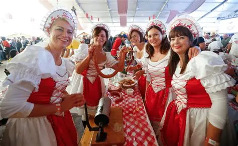
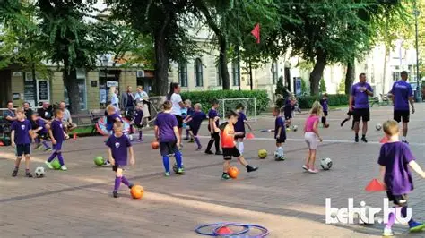
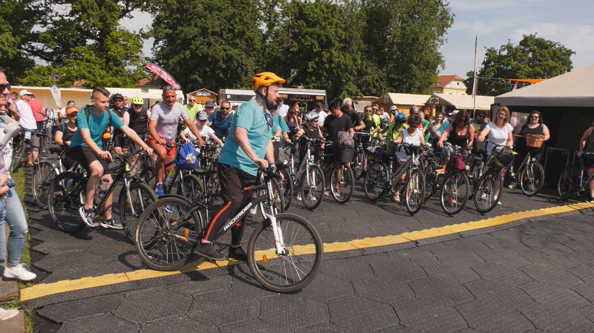
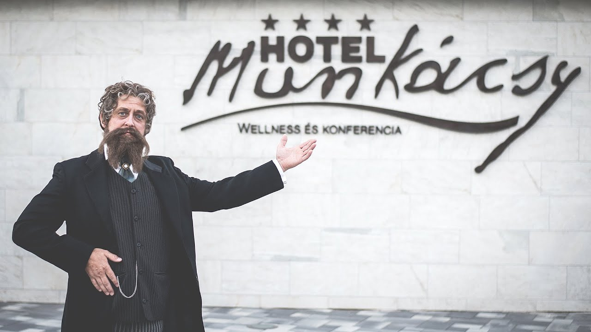
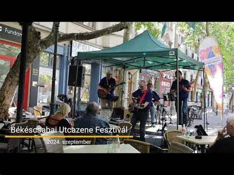

Békéscsabai események 2025
Fedezd fel Békéscsaba legizgalmasabb rendezvényeit, fesztiváljait és kulturális programjait!
Főbb események

Egyéb események

Sporthét Békéscsabán
2025. augusztus 26-30. | Békéscsaba
A város sportegyesületei bemutatják tevékenységüket, lehetőséget biztosítva a lakosság számára a különböző sportágak kipróbálására.
Megnézem!

Háromváros Kerékpáros Fesztivál
2025. június 7-8. | Békéscsaba, Békés, Gyula
Kerékpáros körtúra, amely összeköti a három várost, lehetőséget biztosítva a résztvevők számára a helyi látnivalók felfedezésére.
Megnézem!

Munkácsy Fest - Művészeti Fesztivál
2025. szeptember 25-27. | Munkácsy Negyed
Ingyenes művészeti fesztivál, kiállításokkal, művészeti programokkal és előadásokkal várja a látogatókat.
Megnézem!

Békéscsabai Utcazene Fesztivál
2025. május 23-24. | Békéscsaba
Tehetséges zenészek és zenekarok lépnek fel az utcákon, szórakoztatva a közönséget különböző zenei műfajokkal.
Megnézem!